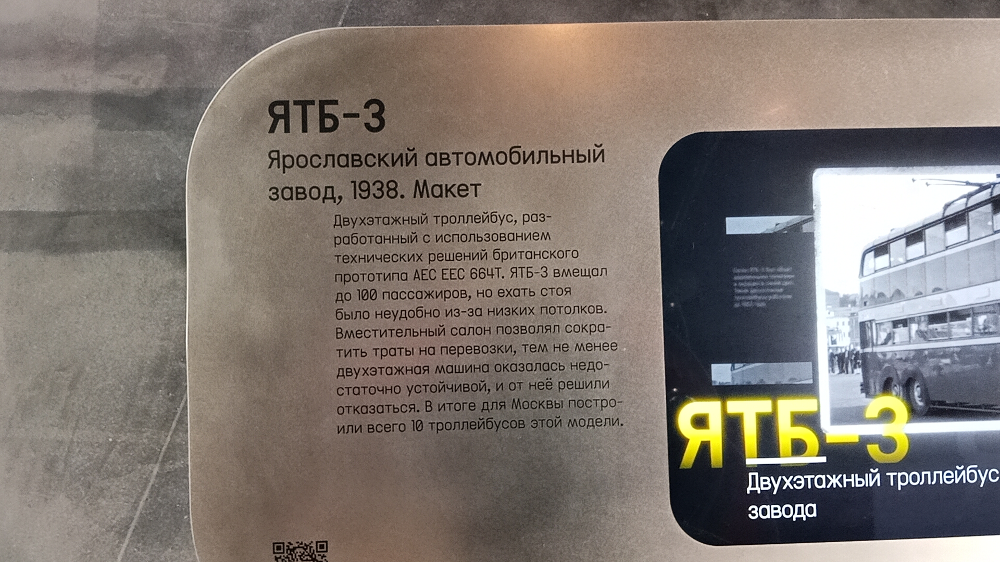

ЯТБ-3
ЯТБ-3 — первый советский двухэтажный троллейбус, разработанный Ярославским автомобильным заводом в 1938 году с использованием технических решений британского прототипа AEC EEC 664T.
Вместительная машина на 80 пассажиров должна была сократить траты на перевозки, однако низкие потолки и недостаточная устойчивость двухэтажного кузова поставили крест на этой идее. Для Москвы было построено всего 10 таких троллейбусов.
Основные данные
| Модель | ЯТБ-3 |
| Производитель | Ярославский автомобильный завод |
| Год постройки | 1938 |
| Вместимость | до 80 пассажиров (32 сидячих на 1-м этаже, 40 на 2-м) |
| Двигатель | Электрический, 74 кВт, привод на 4 задних колеса |
| Автономный ход | До 2,7 км на аккумуляторах |
| Текущее состояние | Не эксплуатируется (макет) |
| Назначение | Музейный |
| Депо/Парк | Музей транспорта Москвы |
История
Предпосылки к созданию
В 1930-х годах в Москве остро стоял вопрос увеличения провозной способности городского транспорта. Город рос, и обычные троллейбусы переставали справляться с пассажиропотоком. Решением мог стать двухэтажный транспорт, популярный в то время в Европе.
Британский прототип
Специалисты Ярославского автомобильного завода изучили опыт создания двухэтажных машин, взяв за основу технические решения британского троллейбуса AEC EEC 664T (Лондон).
Постройка первых машин
На Ярославском заводе был построен первый советский двухэтажный троллейбус ЯТБ-3. Кузов был деревянно-металлическим, с двумя пассажирскими салонами на первом и втором этажах. Изнутри кузов обшивали фанерой и оклеивали дерматином коричневого цвета. Всего для Москвы было изготовлено 10 таких машин.
Неудачная эксплуатация
Троллейбус мог вместить до 80 человек (или до 100 при полной загрузке), но ехать стоя было неудобно из-за низких потолков. Кроме того, из-за высокого центра тяжести машина оказалась недостаточно устойчивой, а на крутых поворотах и подъёмах вела себя опасно. В итоге от модели решили отказаться.
Воссоздание макета
Ни один оригинальный экземпляр ЯТБ-3 не сохранился. Для экспозиции Музея транспорта Москвы специалистами был создан полноразмерный макет троллейбуса, воссоздающий его исторический облик, включая характерные рекламные плакаты на бортах.
Фотогалерея

📸 pfandrom

📸 pfandrom
Нажмите на фото для увеличения